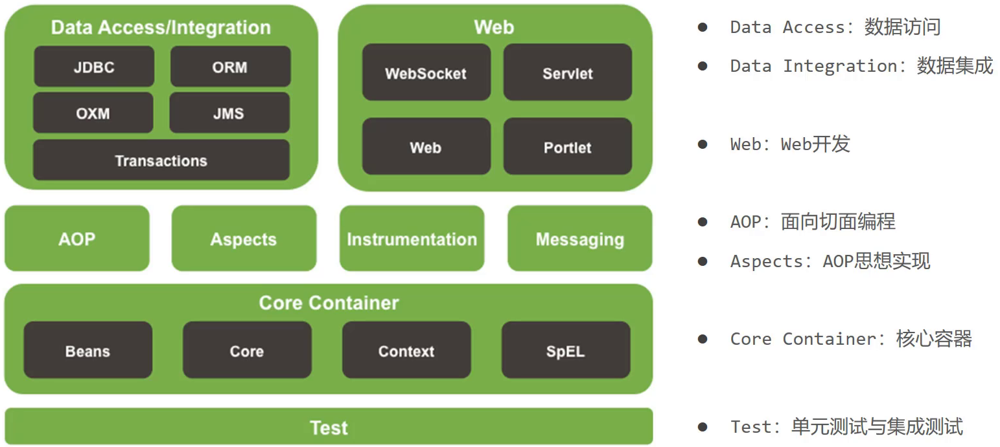

Spring基础 #
1.1 初识Spring #
1.1.1 什么是Spring框架？ #
Spring是一款开源的轻量级JAVA开发框架，旨在提高开发人员的开发效率以及系统的可维护性。
我们一般说Spring框架指的都是Spring Framework，它是很多模块的集合，使用这些模块可以很方便地协助我们进行开发，比如说 Spring 支持 IoC（Inversion of Control:控制反转） 和 AOP(Aspect-Oriented Programming:面向切面编程)、可以很方便地对数据库进行访问、可以很方便地集成第三方组件（电子邮件，任务，调度，缓存等等）、对单元测试支持比较好、支持 RESTful Java 应用程序的开发。
Spring 最核心的思想就是不重新造轮子，开箱即用，提高开发效率。
1.1.2 Spring家族 #
-
官网：https://spring.io，从官网我们可以大概了解到：
- Spring能做什么:用以开发web、微服务以及分布式系统等,光这三块就已经占了JavaEE开发的九成多。
- Spring并不是单一的一个技术，而是一个大家族，可以从官网的
Projects中查看其包含的所有技术。
-
Spring发展到今天已经形成了一种开发的生态圈,Spring提供了若干个项目,每个项目用于完成特定的功能。
-
Spring已形成了完整的生态圈，也就是说我们可以完全使用Spring技术完成整个项目的构建、设计与开发。
-
Spring有若干个项目，可以根据需要自行选择，把这些个项目组合起来，起了一个名称叫==全家桶==，如下图所示
说明:
图中的图标都代表什么含义，可以进入
https://spring.io/projects网站进行对比查看。这些技术并不是所有的都需要学习，额外需要重点关注
Spring Framework、SpringBoot和SpringCloud:- Spring Framework:Spring框架，是Spring中最早最核心的技术，也是所有其他技术的基础。
- SpringBoot:Spring是来简化开发，而SpringBoot是来帮助Spring在简化的基础上能更快速进行开发。
- SpringCloud:这个是用来做分布式之微服务架构的相关开发。
除了上面的这三个技术外，还有很多其他的技术，也比较流行，如SpringData,SpringSecurity等。
-
1.2 Spring系统架构 #
-
Spring Framework是Spring生态圈中最基础的项目，是其他项目的根基。
-
Spring Framework的发展也经历了很多版本的变更，每个版本都有相应的调整
-
Spring Framework的5版本目前没有最新的架构图，而最新的是4版本（现已到5），所以接下来主要研究的是4的架构图
 (1)核心层
- Core Container:核心容器，这个模块是Spring最核心的模块，其他的都需要依赖该模块
(2)AOP层
- AOP:面向切面编程，它依赖核心层容器，目的是==在不改变原有代码的前提下对其进行功能增强==
- Aspects:AOP是思想,Aspects是对AOP思想的具体实现
(3)数据层
- Data Access:数据访问，Spring全家桶中有对数据访问的具体实现技术
- Data Integration:数据集成，Spring支持整合其他的数据层解决方案，比如Mybatis
- Transactions:事务，Spring中事务管理是Spring AOP的一个具体实现，也是后期学习的重点内容
(4)Web层
(5)Test层
- Spring主要整合了Junit来完成单元测试和集成测试
Spring5.x版本
Spring5.x 版本中 Web 模块的 Portlet 组件已经被废弃掉，同时增加了用于异步响应式处理的 WebFlux 组件。
[!NOTE]
同步响应：
在同步响应中，程序执行会等待某个任务完成后，才能继续执行后续的操作。换句话说，当前操作完成后才会执行下一步。
异步响应：
在异步响应中，程序在发出请求后不会等待任务完成，而是继续执行其他操作。任务完成后，会通过回调或其他机制通知程序，通常不会阻塞主线程。
Spring 各个模块的依赖关系如下：
Core Container
Spring框架的核心模块，也可以说是基础模块，主要提供IOC依赖注入功能的支持，Spring其他所有的功能基本都需要依赖于该模块。
- spring-core：Spring框架基本的核心工具类。
- spring-beans：提供对bean的创建、配置和管理等功能的支持。
- spring-context：提供对国际化、事件传播、资源加载等功能的支持。
- spring-expression：提供对表达式语言（Spring Expression Language） SpEL 的支持，只依赖于 core 模块，不依赖于其他模块，可以单独使用。
AOP
-
spring-aspects：该模块为与 AspectJ 的集成提供支持。
-
spring-aop：提供了面向切面的编程实现。
-
spring-instrument：提供了为 JVM 添加代理（agent）的功能。 具体来讲，它为 Tomcat 提供了一个织入代理，能够为 Tomcat 传递类文 件，就像这些文件是被类加载器加载的一样。没有理解也没关系，这个模块的使用场景非常有限。
Data Access/Integration
-
spring-jdbc：提供了对数据库访问的抽象 JDBC。不同的数据库都有自己独立的 API 用于操作数据库，而 Java 程序只需要和 JDBC API 交互，这样就屏蔽了数据库的影响。
-
spring-tx：提供对事务的支持。
-
spring-orm：提供对 Hibernate、JPA、iBatis 等 ORM 框架的支持。
-
spring-oxm：提供一个抽象层支撑 OXM(Object-to-XML-Mapping)，例如：JAXB、Castor、XMLBeans、JiBX 和 XStream 等。
-
spring-jms : 消息服务。自 Spring Framework 4.1 以后，它还提供了对 spring-messaging 模块的继承。
Spring Web
-
spring-web：对 Web 功能的实现提供一些最基础的支持。
-
spring-webmvc：提供对 Spring MVC 的实现。
-
spring-websocket：提供了对 WebSocket 的支持，WebSocket 可以让客户端和服务端进行双向通信。
-
spring-webflux：提供对 WebFlux 的支持。WebFlux 是 Spring Framework 5.0 中引入的新的响应式框架。与 Spring MVC 不同，它不需要 Servlet API，是完全异步。
Messaging
spring-messaging 是从 Spring4.0 开始新加入的一个模块，主要职责是为 Spring 框架集成一些基础的报文传送应用。
Spring Test
Spring 团队提倡测试驱动开发（TDD）。有了控制反转 (IoC)的帮助，单元测试和集成测试变得更简单。
Spring 的测试模块对 JUnit（单元测试框架）、TestNG（类似 JUnit）、Mockito（主要用来 Mock 对象）、PowerMock（解决 Mockito 的问题比如无法模拟 final, static， private 方法）等等常用的测试框架支持的都比较好。
1.2.1 Spring,SpringMVC,SpringBoot之间的关系 #
Spring 包含了多个功能模块（上面刚刚提到过），其中最重要的是 Spring-Core（主要提供 IoC 依赖注入功能的支持） 模块， Spring 中的其他模块（比如 Spring MVC）的功能实现基本都需要依赖于该模块。
Spring MVC 是 Spring 中的一个很重要的模块，主要赋予 Spring 快速构建 MVC 架构的 Web 程序的能力。MVC 是模型(Model)、视图(View)、控制器(Controller)的简写，其核心思想是通过将业务逻辑、数据、显示分离来组织代码。
使用 Spring 进行开发各种配置过于麻烦比如开启某些 Spring 特性时，需要用 XML 或 Java 进行显式配置。于是有了Spring Boot。
Spring 旨在简化 J2EE 企业应用程序开发。Spring Boot 旨在简化 Spring 开发（减少配置文件，开箱即用！）。
Spring Boot 只是简化了配置，如果你需要构建 MVC 架构的 Web 程序，你还是需要使用 Spring MVC 作为 MVC 框架，只是说 Spring Boot 帮你简化了 Spring MVC 的很多配置，真正做到开箱即用。
1.3 Spring核心概念 #
在Spring核心概念这部分内容中主要包含IOC/DI、IOC容器和Bean。
要想解答这个问题，就需要先分析下目前咱们代码在编写过程中遇到的问题:
(1)业务层需要调用数据层的方法，就需要在业务层new数据层的对象
(2)如果数据层的实现类发生变化，那么业务层的代码也需要跟着改变，发生变更后，都需要进行编译打包和重部署
(3)所以，现在代码在编写的过程中存在的问题是：==耦合度偏高==
针对这个问题，Spring就提出了一个解决方案:
- 使用对象时，在程序中不要主动使用new产生对象，转换为由==外部==提供对象
这种实现思就是Spring的一个核心概念
1.3.1 IOC、IOC容器、Bean、DI #
- ==IOC（Inversion of Control）控制反转==：是一种设计思想，而不是一个具体的技术实现。IoC 的思想就是将原本在程序中手动创建对象的控制权，交由 Spring 框架来管理。不过， IoC 并非 Spring 特有，在其他语言中也有应用。
(1)什么是控制反转呢？
**控制：**指的是对象创建（实例化、管理）的权力。
**反转：**控制权交给外部环境（Spring框架、IoC容器）
将对象之间的相互依赖关系交给 IoC 容器来管理，并由 IoC 容器完成对象的注入。这样可以很大程度上简化应用的开发，把应用从复杂的依赖关系中解放出来。 IoC 容器就像是一个工厂一样，当我们需要创建一个对象的时候，只需要配置好配置文件/注解即可，完全不用考虑对象是如何被创建出来的。
在实际项目中一个 Service 类可能依赖了很多其他的类，假如我们需要实例化这个 Service，你可能要每次都要搞清这个 Service 所有底层类的构造函数，这可能会把人逼疯。如果利用 IoC 的话，你只需要配置好，然后在需要的地方引用就行了，这大大增加了项目的可维护性且降低了开发难度。
在 Spring 中， IoC 容器是 Spring 用来实现 IoC 的载体， IoC 容器实际上就是个 Map（key，value），Map 中存放的是各种对象。
Spring 时代我们一般通过 XML 文件来配置 Bean，后来开发人员觉得 XML 文件来配置不太好，于是 SpringBoot 注解配置就慢慢开始流行起来。
使用对象时，由主动new产生对象转换为由==外部==提供对象，此过程中对象创建控制权由程序转移到外部，此思想称为控制反转。
- 业务层要用数据层的类对象，以前是自己
new的- 现在自己不new了，交给
别人[外部]来创建对象别人[外部]就反转控制了数据层对象的创建权- 这种思想就是控制反转
(2)Spring和IOC之间的关系是什么呢?
- Spring技术对IOC思想进行了实现
- Spring提供了一个容器，称为==IOC容器==，用来充当IOC思想中的"外部"
- IOC思想中的
别人[外部]指的就是Spring的IOC容器
(3)IOC容器的作用以及内部存放的是什么?
- IOC容器负责对象的创建、初始化等一系列工作，其中包含了数据层和业务层的类对象
- 被创建或被管理的对象在IOC容器中统称为==Bean==
- IOC容器中放的就是一个个的Bean对象
(4)当IOC容器中创建好service和dao对象后，程序能正确执行么?
- 不行，因为service运行需要依赖dao对象
- IOC容器中虽然有service和dao对象
- 但是service对象和dao对象没有任何关系
- 需要把dao对象交给service,也就是说要绑定service和dao对象之间的关系
像这种在容器中建立对象与对象之间的绑定关系就要用到DI:
- ==DI（Dependency Injection）依赖注入==
(1)什么是依赖注入呢?
-
在容器中建立bean与bean之间的依赖关系的整个过程，称为依赖注入
-
业务层要用数据层的类对象，以前是自己
new的 -
现在自己不new了，靠
别人[外部其实指的就是IOC容器]来给注入进来
- 这种思想就是依赖注入
-
(2)IOC容器中哪些bean之间要建立依赖关系呢?
- 这个需要程序员根据业务需求提前建立好关系，如业务层需要依赖数据层，service就要和dao建立依赖关系
介绍完Spring的IOC和DI的概念后，我们会发现这两个概念的最终目标就是:==充分解耦==，具体实现靠:
- 使用IOC容器管理bean（IOC)
- 在IOC容器内将有依赖关系的bean进行关系绑定（DI）
- 最终结果为:使用对象时不仅可以直接从IOC容器中获取，并且获取到的bean已经绑定了所有的依赖关系.
Spring的常见注解 #
Spring的常见注解包括：
- 声明Bean的注解：
@Component、@Service、@Repository（用于标注数据访问层（DAO，Data Access Object））、@Controller。 - 依赖注入相关注解：
@Autowired、@Qualifier、@Resource。 - 设置作用域的注解：
@Scope。 - 配置相关注解：
@Configuration、@ComponentScan、@Bean。 - AOP相关注解：
@Aspect、@Before、@After、@Around、@Pointcut。
1.3.2 Spring Bean #
1.3.2.1 什么是Spring Bean？ #
简单来说，Bean 代指的就是那些被 IoC 容器所管理的对象。
我们需要告诉 IoC 容器帮助我们管理哪些对象，这个是通过配置元数据来定义的。配置元数据可以是 XML 文件、注解或者 Java 配置类。
<!-- Constructor-arg with 'value' attribute -->
<bean id="..." class="...">
<constructor-arg value="..."/>
</bean>
下图简单地展示了 IoC 容器如何使用配置元数据来管理对象。
org.springframework.beans和 org.springframework.context 这两个包是 IoC 实现的基础。
1.3.2.2 将一个类声明为Bean的注解有哪些？ #
-
@Component：通用的注解，可标注任意类为Spring组件。如果一个 Bean 不知道属于哪个层，可以使用@Component注解标注。 -
@Repository: 对应持久层即 Dao 层，主要用于数据库相关操作。 -
@Service: 对应服务层，主要涉及一些复杂的逻辑，需要用到 Dao 层。 -
@Controller: 对应 Spring MVC 控制层，主要用于接受用户请求并调用Service层返回数据给前端页面。
1.3.2.3 @Component和@Bean的区别是什么？ #
-
@Component注解作用于类，而@Bean注解作用于方法。 -
@Component通常是通过类路径扫描来自动侦测以及自动装配到 Spring 容器中（我们可以使用@ComponentScan注解定义要扫描的路径从中找出标识了需要装配的类自动装配到 Spring 的 bean 容器中）。@Bean注解通常是我们在标有该注解的方法中定义产生这个 bean,@Bean告诉了 Spring 这是某个类的实例，当我需要用它的时候还给我。 -
@Bean注解比@Component注解的自定义性更强，而且很多地方我们只能通过@Bean注解来注册 bean。比如当我们引用第三方库中的类需要装配到Spring容器时，则只能通过@Bean来实现。
@Bean注解使用示例：
@Configuration
public class AppConfig {
@Bean
public TransferService transferService() {
return new TransferServiceImpl();
}
}
上面的代码相当于下面的 xml 配置：
<beans>
<bean id="transferService" class="com.acme.TransferServiceImpl"/>
</beans>
1.3.2.4 注入Bean的注解有哪些？ #
Spring 内置的 @Autowired 以及 JDK 内置的 @Resource 和 @Inject 都可以用于注入 Bean。
| Annotation | Package | Source |
|---|---|---|
@Autowired |
org.springframework.bean.factory |
Spring 2.5+ |
@Resource |
javax.annotation |
Java JSR-250 |
@Inject |
javax.inject |
Java JSR-330 |
@Autowired 和@Resource使用的比较多一些。
1.3.2.5 @Autowired和@Resource的区别是什么？ #
Autowired 属于 Spring 内置的注解，默认的注入方式为byType（根据类型进行匹配），也就是说会优先根据接口类型去匹配并注入 Bean （接口的实现类）。
这会有什么问题呢？ 当一个接口存在多个实现类的话，byType这种方式就无法正确注入对象了，因为这个时候 Spring 会同时找到多个满足条件的选择，默认情况下它自己不知道选择哪一个。
这种情况下，注入方式会变为 byName（根据名称进行匹配），这个名称通常就是类名（首字母小写）。就比如说下面代码中的 smsService 就是我这里所说的名称。
// smsService 就是我们上面所说的名称
@Autowired
private SmsService smsService;
举个例子，SmsService 接口有两个实现类: SmsServiceImpl1和 SmsServiceImpl2，且它们都已经被 Spring 容器所管理。
// 报错，byName 和 byType 都无法匹配到 bean
@Autowired
private SmsService smsService;
// 正确注入 SmsServiceImpl1 对象对应的 bean
@Autowired
private SmsService smsServiceImpl1;
// 正确注入 SmsServiceImpl1 对象对应的 bean
// smsServiceImpl1 就是我们上面所说的名称
@Autowired
@Qualifier(value = "smsServiceImpl1")
private SmsService smsService;
我们还是建议通过 @Qualifier 注解来显式指定名称而不是依赖变量的名称。
@Resource属于 JDK 提供的注解，默认注入方式为 byName。如果无法通过名称匹配到对应的 Bean 的话，注入方式会变为byType。
@Resource 有两个比较重要且日常开发常用的属性：name（名称）、type（类型）。
public @interface Resource {
String name() default "";
Class<?> type() default Object.class;
}
如果仅指定 name 属性则注入方式为byName，如果仅指定type属性则注入方式为byType，如果同时指定name 和type属性（不建议这么做）则注入方式为byType+byName。
// 报错，byName 和 byType 都无法匹配到 bean
@Resource
private SmsService smsService;
// 正确注入 SmsServiceImpl1 对象对应的 bean
@Resource
private SmsService smsServiceImpl1;
// 正确注入 SmsServiceImpl1 对象对应的 bean（比较推荐这种方式）
@Resource(name = "smsServiceImpl1")
private SmsService smsService;
总结：
-
@Autowired是 Spring 提供的注解，@Resource是 JDK 提供的注解。 -
Autowired默认的注入方式为byType（根据类型进行匹配），@Resource默认注入方式为byName（根据名称进行匹配）。 -
当一个接口存在多个实现类的情况下，
@Autowired和@Resource都需要通过名称才能正确匹配到对应的 Bean。Autowired可以通过@Qualifier注解来显式指定名称，@Resource可以通过name属性来显式指定名称。 -
@Autowired支持在构造函数、方法、字段和参数上使用。@Resource主要用于字段和方法上的注入，不支持在构造函数或参数上使用。
1.3.2.6 注入Bean的方式有哪些？ #
依赖注入（Dependency Injection，DI）的常见方式：
-
构造函数注入：通过类的构造函数来注入依赖项。
-
Setter 注入：通过类的 Setter 方法来注入依赖项。
-
Field（字段） 注入：直接在类的字段上使用注解（如
@Autowired或@Resource）来注入依赖项。
构造函数注入示例：
@Service
public class UserService {
private final UserRepository userRepository;
public UserService(UserRepository userRepository) {
this.userRepository = userRepository;
}
//...
}
Setter 注入示例:
@Service
public class UserService {
private UserRepository userRepository;
// 在 Spring 4.3 及以后的版本，特定情况下 @Autowired 可以省略不写
@Autowired
public void setUserRepository(UserRepository userRepository) {
this.userRepository = userRepository;
}
//...
}
Field 注入示例：
@Service
public class UserService {
@Autowired
private UserRepository userRepository;
//...
}
1.3.2.7 构造函数注入还是Setter注入？ #
Spring官方有对这个问题的回答：https://docs.spring.io/spring-framework/reference/core/beans/dependencies/factory-collaborators.html#beans-setter-injection。
总结如下：
Spring官方推荐构造函数注入，这种注入方式的优势如下：
-
依赖完整性：确保所有必需依赖在对象创建时就被注入，避免了空指针异常的风险。
-
不可变性：有助于创建不可变对象，提高了线程安全性。
-
初始化保证：组件在使用前已完全初始化，减少了潜在的错误。
-
测试便利性：在单元测试中，可以直接通过构造函数传入模拟的依赖项，而不必依赖 Spring 容器进行注入。
构造函数注入适合处理必需的依赖项，而 Setter 注入 则更适合可选的依赖项，这些依赖项可以有默认值或在对象生命周期中动态设置。虽然 @Autowired 可以用于 Setter 方法来处理必需的依赖项，但构造函数注入仍然是更好的选择。
在某些情况下（例如第三方类不提供 Setter 方法），构造函数注入可能是唯一的选择。
1.3.2.8 Bean的作用域有哪些？ #
Spring中Bean的作用域通常有以下几种：
-
singleton : IoC 容器中只有唯一的 bean 实例。Spring 中的 bean 默认都是单例的，是对单例设计模式的应用。
-
prototype : 每次获取都会创建一个新的 bean 实例。也就是说，连续
getBean()两次，得到的是不同的 Bean 实例。 -
request （仅 Web 应用可用）: 每一次 HTTP 请求都会产生一个新的 bean（请求 bean），该 bean 仅在当前 HTTP request 内有效。
-
session （仅 Web 应用可用） : 每一次来自新 session 的 HTTP 请求都会产生一个新的 bean（会话 bean），该 bean 仅在当前 HTTP session 内有效。
-
application/global-session （仅 Web 应用可用）：每个 Web 应用在启动时创建一个 Bean（应用 Bean），该 bean 仅在当前应用启动时间内有效。
-
websocket （仅 Web 应用可用）：每一次 WebSocket 会话产生一个新的 bean。
如何配置bean的作用域？
xml方式：
<bean id="..." class="..." scope="singleton"></bean>
注解方式：
@Bean
@Scope(value = ConfigurableBeanFactory.SCOPE_PROTOTYPE)
public Person personPrototype() {
return new Person();
}
1.3.2.9 Bean是线程安全的吗？ #
Spring 框架中的 Bean 是否线程安全，取决于其作用域和状态。
我们以最常用的两种作用域 prototype 和 singleton 为例介绍。几乎所有场景的 Bean 作用域都是使用默认的 singleton ，重点关注 singleton 作用域即可。
prototype 作用域下，每次获取都会创建一个新的 bean 实例，不存在资源竞争问题，所以不存在线程安全问题。singleton 作用域下，IoC 容器中只有唯一的 bean 实例，可能会存在资源竞争问题（取决于 Bean 是否有状态）。如果这个 bean 是有状态的话，那就存在线程安全问题（有状态 Bean 是指包含可变的成员变量的对象）。
有状态 Bean 示例：
// 定义了一个购物车类，其中包含一个保存用户的购物车里商品的 List
@Component
public class ShoppingCart {
private List<String> items = new ArrayList<>();
public void addItem(String item) {
items.add(item);
}
public List<String> getItems() {
return items;
}
}
不过，大部分 Bean 实际都是无状态（没有定义可变的成员变量）的（比如 Dao、Service），这种情况下， Bean 是线程安全的。
[!NOTE]
关于Dao：
在 Java 中，DAO 是 Data Access Object 的缩写，意思是 数据访问对象。它是一种设计模式，用来把应用程序的业务逻辑和数据库操作代码分离开。
DAO 是用来和数据库打交道的 Java 类，专门负责对某个表或某组数据进行增删改查（CRUD）操作。
无状态 Bean 示例：
// 定义了一个用户服务，它仅包含业务逻辑而不保存任何状态。
@Component
public class UserService {
public User findUserById(Long id) {
//...
}
//...
}
对于有状态的单例Bean存在的线程安全问题，常见的三种解决办法是：
-
避免可变成员变量: 尽量设计 Bean 为无状态。
-
使用
ThreadLocal: 将可变成员变量保存在ThreadLocal中，确保线程独立。 -
使用同步机制: 利用
synchronized或ReentrantLock来进行同步控制，确保线程安全。
[!NOTE]
ThreadLocal是 Java 里一个线程级别的本地变量工具类，可以让每个线程都有自己独立的变量副本，互不干扰。在多线程环境下，每个线程都需要一个自己的用户信息、日期格式器、事务上下文等，这时候就用
ThreadLocal来保存这些“只属于当前线程”的数据。
这里以 ThreadLocal为例，演示一下ThreadLocal 保存用户登录信息的场景：
public class UserThreadLocal {
private UserThreadLocal() {}
private static final ThreadLocal<SysUser> LOCAL = ThreadLocal.withInitial(() -> null);
public static void put(SysUser sysUser) {
LOCAL.set(sysUser);
}
public static SysUser get() {
return LOCAL.get();
}
public static void remove() {
LOCAL.remove();
}
}
1.4 Bean的生命周期 #
-
**创建Bean的实例：**Bean 容器首先会找到配置文件中的 Bean 定义，然后使用 Java 反射 API 来创建 Bean 的实例。
-
Bean 属性赋值/填充：为 Bean 设置相关属性和依赖，例如
@Autowired等注解注入的对象、@Value注入的值、setter方法或构造函数注入依赖和值、@Resource注入的各种资源。 -
Bean初始化：
-
如果 Bean 实现了 BeanNameAware 接口，调用
setBeanName()方法，传入 Bean 的名字。 -
如果 Bean 实现了
BeanClassLoaderAware接口，调用setBeanClassLoader()方法，传入ClassLoader对象的实例。 -
如果 Bean 实现了
BeanFactoryAware接口，调用setBeanFactory()方法，传入BeanFactory对象的实例。 -
与上面的类似，如果实现了其他
*.Aware接口，就调用相应的方法。 -
如果有和加载这个 Bean 的 Spring 容器相关的
BeanPostProcessor对象，执行postProcessBeforeInitialization()方法 -
如果 Bean 实现了
InitializingBean接口，执行afterPropertiesSet()方法。 -
如果 Bean 在配置文件中的定义包含
init-method属性，执行指定的方法。 -
如果有和加载这个 Bean 的 Spring 容器相关的
BeanPostProcessor对象，执行postProcessAfterInitialization()方法。
-
-
销毁Bean：销毁并不是说要立马把 Bean 给销毁掉，而是把 Bean 的销毁方法先记录下来，将来需要销毁 Bean 或者销毁容器的时候，就调用这些方法去释放 Bean 所持有的资源。
-
如果 Bean 实现了
DisposableBean接口，执行destroy()方法。 -
如果 Bean 在配置文件中的定义包含
destroy-method属性，执行指定的 Bean 销毁方法。或者，也可以直接通过@PreDestroy注解标记 Bean 销毁之前执行的方法。
Aware接口能让 Bean 能拿到 Spring 容器资源。
Spring 中提供的
Aware接口主要有：BeanNameAware：注入当前 bean 对应 beanName；BeanClassLoaderAware：注入加载当前 bean 的 ClassLoader；BeanFactoryAware：注入当前BeanFactory容器的引用。
BeanPostProcessor接口是 Spring 为修改 Bean 提供的强大扩展点。public interface BeanPostProcessor { // 初始化前置处理 default Object postProcessBeforeInitialization(Object bean, String beanName) throws BeansException { return bean; } // 初始化后置处理 default Object postProcessAfterInitialization(Object bean, String beanName) throws BeansException { return bean; } }-
postProcessBeforeInitialization：Bean 实例化、属性注入完成后，InitializingBean#afterPropertiesSet方法以及自定义的init-method方法之前执行； -
postProcessAfterInitialization：类似于上面，不过是在InitializingBean#afterPropertiesSet方法以及自定义的init-method方法之后执行。
InitializingBean和init-method是 Spring 为 Bean 初始化提供的扩展点。public interface InitializingBean { // 初始化逻辑 void afterPropertiesSet() throws Exception; }指定
init-method方法，指定初始化方法：<?xml version="1.0" encoding="UTF-8"?> <beans xmlns="http://www.springframework.org/schema/beans" xmlns:xsi="http://www.w3.org/2001/XMLSchema-instance" xsi:schemaLocation="http://www.springframework.org/schema/beans http://www.springframework.org/schema/beans/spring-beans.xsd"> <bean id="demo" class="com.chaycao.Demo" init-method="init()"/> </beans> -
如何记忆？
-
整体上可以简单分为四步：实例化 —> 属性赋值 —> 初始化 —> 销毁。
-
初始化这一步涉及到的步骤比较多，包含
Aware接口的依赖注入、BeanPostProcessor在初始化前后的处理以及InitializingBean和init-method的初始化操作。 -
销毁这一步会注册相关销毁回调接口，最后通过
DisposableBean和destory-method进行销毁。